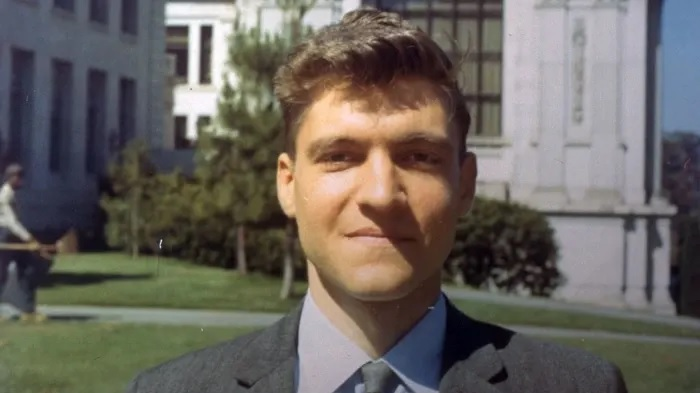
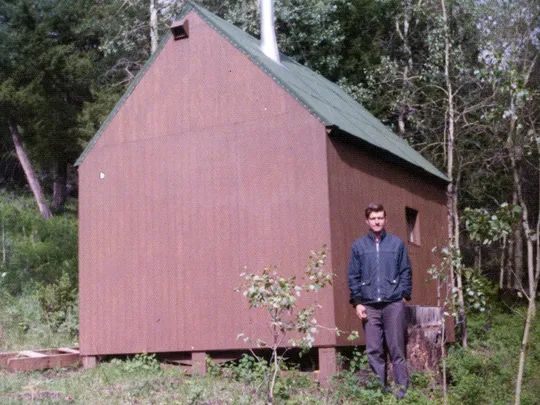

Conocido como el Unabomber, Ted es un matemático estadounidense devenido en terrorista, conocido por enviar cartas bomba desde 1978 a 1995. En atentados que justificaría luego con un manifiesto político en el que hace un análisis
crítico del desarrollo tecnológico en la sociedad contemporánea.
Graduado en matemáticas en Harvard, a los 26 Ted renuncia a su posición de asistente de profesor para mudarse a una cabaña en Lincoln,
Montana. Donde viviría de ahí en más, sin luz ni agua corriente, buscando una vida de aislamiento y auto-suficiencia, impulsado por una pasión por vivir la vida en una vuelta hacia lo primitivo
y la naturaleza.
Sus ataques con bombas, que él mismo desarrollaba y perfeccionaba, estaban motivados por ideas y construcciones intelectuales en las que Kaczinsky alertaba que la industrialización
y el desarrollo de la técnica y la tecnología en la sociedad actual, habían causado ya, y causarían irreversibles daños a la civilización. Así que muchas de sus víctimas estaban relacionadas a la computación, la innovación
o la ciencia y la tecnología.
“La Revolución Industrial y sus consecuencias han sido un desastre para la naturaleza humana […] Han incrementado en gran parte la expectativa de vida de las personas de los países “avanzados”, pero han desestabilizado la sociedad, han hecho la vida insatisfactoria, han sujeto seres humanos a indignidades, y han dispersado por el mundo todo tipo de sufrimientos psicológicos […] infligiendo severos daños al mundo natural”
La Sociedad Industrial y su Futuro
Ted Kaczynski
Ted Kaczynski como Eneatipo V
“La pasión avaricia es la necesidad neurótica de conservar lo poco que se siente haber conquistado, o lo poco que se lleva dentro de sí. Con la vivencia existencial de haber perdido la unión originaria, el cinco renuncia a lo que no tiene, mientras busca no perder lo poco que le queda.”
27 Persoajes en Busca del Ser
Claudio Naranjo
A veces esta experiencia se puede presentar de forma directa en lo que algunos escritos sobre este eneatipo y sobre el fenómeno Esquizoide en general cuentan. Como una experiencia temprana de separación física real de la madre. Experiencia que resulta traumática para el niño que siente que tiene que valerse por sí mismo y que no puede confiar en que los otros lo asistan.
“En los primeros meses de mi vida tuve dos episodios de separación de mi madre, los cuales no recuerdo, pero que me dejaron la sensación de que el mundo no era un lugar ni seguro ni agradable para vivir. El primer episodio fue cuando casi me ahogué en el parto, con la consiguiente desconexión. El segundo fue a los nueve meses: me deshidraté y me bajaron las constantes visibles durante unos días. Estuve entre la vida y la muerte y me operaron para salvarme. Por todo ello estuve hospitalizada, sin la presencia de mi madre, que estaba en otro centro hospitalario porque estaba embarazada de mi hermana y estaba en riesgo de perderla”
27 Persoajes en Busca del Ser
Mireia Darder
Esta es una experiencia que encontramos también en la vida del Unabomber, tanto en su evaluación psicológica, como en relatos de su hermano, nos cuentan
“Ted fue hospitalizado a los nueve meses de edad, durante varios días, por una reacción alérgica. La visita al hospital fue normal y fue dado de alta sin ninguna secuela médica […] Sin embargo, la información que da su madre Wanda indicó que la hospitalización fue un trauma significativo para su hijo. Por experimentar una separación de la madre, Wanda describe que Ted había cambiado luego de la hospitalización, estaba retraído, poco comunicativo y más temeroso de ser separado de la madre a partir de ese momento.”
Evaluación Psicológica
“Tenia siete u ocho años cuando por primera vez le pregunté a mi madre. ¿Qué le pasa a Ted? […] él no tiene ningún amigo, parece como que no le gusta la gente.
Me dijo ella: Cuando
Ted tenía nueve meses, tuvo que ir al hospital, por un sarpullido que le cubría su cuerpo. En esos días los hospitales no dejaban que los padres estén con un bebé enfermo, y sólo teníamos permitido visitarlo cada ciertos
días por unas pocas horas. Tu hermano gritaba de terror cuando yo lo entregaba a la enfermera y ella lo llevaba a otra habitación. Estaba terriblemente asustado, y pensó que Papá y yo lo abandonamos con crueles extraños.
Probablemente pensó que no lo amábamos más y que no volveríamos a buscarlo nunca más. La herida nunca se fue completamente”
David Kaczynski
Por lo que se refiere a la necesidad de sentir que existe y que es amado, el eneatipo cinco pone distancia respecto a la necesidad misma, y al otro, que representa quien podría despertar esa necesidad.
Para
obtener esa renuncia, se ve obligado a separarse de sus sentimientos y poner la energía en una pasión intelectual que él imagina podría colmar la sensación de sentirse pobre y desheredado.
Como
los otros caracteres mentales, el cinco busca, a través de la adquisición de conocimientos intelectuales, colmar la distancia que siente en las relaciones, distancia que él mismo crea para no sentirse dominado por el
caos emotivo que implican las relaciones afectivas.
La avaricia, la pasión de este tipo, debe ser entendida entonces como una dificultad de dar al otro partes de sí, sean emociones o vínculos íntimos. Incluso bajo el aspecto concreto el
cinco no logra soltar. […]
El cinco describe su infancia como un lugar y tiempo de soledad que va mas allá de los acontecimientos, las relaciones siempre tienen un estilo formal y ascéptico. […]
Para el
cinco, el cuerpo – espacio primario para la definición de uno mismo – con sus percepciones, pulsiones e instintos, deja muy temprano de ser la base de acceso a sí mismo, al otro y al mundo, y las informaciones cognitivas
se transforman en el canal preferido para el intercambio relacional y para la construcción de la propia identidad.
Mantener las relaciones es costoso, y por lo tanto, no solo se las limita a un número sostenible, sino que se las encasilla en categorías precisas e inconfundibles entre sí: un amigo es un amigo, si se transforma en colega,
a nivel emocional se crea una confusión interior no controlable. El aislamiento, fijación del cinco, debe ser entendido no solo como aislamiento de los demás, sino también como aislamiento de las experiencias entre sí, y aislamiento entre el mundo intelectual y el emotivo.
[…]
Tienen constantemente el temor de ser invadido por el otro, temor debido a una hipersensibilidad y a una sensación de vulnerabilidad. […]
Parecen fríos, inexpresivos, pensativos, inhibidos,
desconfiados y físicamente retraídos.
Claudio Naranjo
Ted Kaczynski como Subtipo Conservación
Aunque todos los cinco comparten la mayoría de estas características. Hay diferencias fundamentales entre sus subtipos. Una de estas diferencias radica en la búsqueda que tiene cada uno.
El subtipo social,
por ejemplo, simplificando bastante, podríamos decir que busca lo perdido al desconectarse de la vida, en la persecución de un ideal, un “tótem” lo llama Naranjo, algo excepcional más
allá que figura como promesa para terminar con la sensación de vacío. Algo similar sucede con el subtipo sexual, aunque este lo hace persiguiendo un “ideal” de pareja o una persona en la que pueda confiar y se pueda convertir en su confidente.
En ambos casos, estos subtipos son más impulsados en cierto modo a buscar “afuera” la satisfacción de su pasión neurótica. En el caso del subtipo conservación,
es algo distinto. El cinco conservación es descripto por Naranjo como el más cinco de los cinco. Por el sentido de que es el que más expone las características típicas del Eneatipo, y también porque,
su pasión, busca en cambio un aislamiento, una retirada en sí mismos, apartándose de los demás, que le generan demasiado conflicto.
La necesidad de retirarse es una característica clara para el Cinco Conservación […] la pasión tiene mucho que ver con encontrar refugio, erigir altos muros que lo separen de un mundo
que puede invadirlo […] El E5 conservación limita extremadamente sus necesidades y sus deseos, ya que cada deseo podría significar para él un estatus de dependencia […] es en el pensamiento, la reflexión incesante sobre la manera de sobrevivir y de vivir mediante la limitación de perturbaciones externas,
donde encuentra el refugio más grande.
27 Persoajes en Busca del Ser
Claudio Naranjo
Hipersensibilidad, falta de asertividad y resentimiento
El Eneatipo Cinco es descripto en Carácter y Neurosis como alguien hiper-sensible. Para alguien de afuera puede parecer raro ya que los cinco no suelen mostrar sentimientos y parecen ser bastante inmutables a todo lo que les sucede. Como mencioné en la sección anterior, los cinco son descriptos como fríos, inexpresivos, inhibidos y retraídos.
Sin embargo esto proviene del mecanismo de defensa del aislamiento.
Algo que describen muchos testimonios y libros acerca del Trastorno Esquizoide, íntimamente relacionado con este eneatipo. Es el hecho de que la persona relata hechos de su vida que pueden ser potencialmente
traumáticos o emocionalmente cargados, de forma totalmente desapegada, como si estuviera relatando algo que no le afecta en absoluto, o que le pasó a otro y no a él. Esto ocurre porque a través de este
mecanismo de defensa, se desconecta el afecto de la representación mental, o del hecho mismo en otras palabras, y entonces, ambas cosas quedan separadas. El afecto por un lado, los acontecimientos por el otro…
Sin
embargo aún con toda esa indiferencia, este eneatipo es uno de los más sensibles, y es precisamente a partir de esta hiper-sensibilidad de la que vienen muchos de los “síntomas” o características, entre ellos la desconexión.
Que resulta “necesaria” cuando se es tan propenso a sentirse invadido o agobiado por los otros.
Es de esta manera en el que toma sentido la pasión del subtipo conservación. Este subtipo del cinco
busca el “refugio”. Refugiarse ante la invasión externa.
Esta hipersensibilidad convive con una incapacidad para ser asertivo y reafirmarse o confrontar a los
demás. Ante lo que suele reaccionar con una obediencia automática. Por lo que se genera un círculo vicioso, en el que la persona, por su sensibilidad ante los otros y su incapacidad de confrontar o
expresar lo que siente, recurre a una respuesta automática de hiperadaptabilidad ante el otro. Lo que le lleva a no mostrarse realmente como es. Diría Naranjo que este subtipo, se esconde por una incapacidad para confrontar,
y no quiere mostrar su lado antisocial.
Esto lleva a lo que uno de sus colaboradores llama la “acción clandestina”, donde la persona hace cosas intentando que los demás no se enteren o de forma
extremadamente privada. El 5 conservación es muy celoso de su privacidad, su espacio y su independencia
“Actuar en secreto para que sus acciones no le comprometan se convierte en una forma de rehuir la confrontación y de evitar generar expectativas o relaciones de dependencia. La hiperadaptabilidad se
manifiesta, por ejemplo, en una forma compulsiva de decir que sí ante una demanda externa, si la negativa puede resultar incómoda o conllevar un conflicto, y en decir lo que uno cree que la otra persona quiere oir.”
27 Persoajes en Busca del Ser
Ignacio
La acción clandestina se ve en ocasiones de este caso. Después de todo Ted enviaba sus bombas a través del correo de forma anónima y logró, por su extremado cuidado a no ser descubierto y su resolución en distraer a
la policía con falsas pistas, pasar inadvertido durante 20 años de ataques terroristas. Sólo fue descubierto cuando su hermano reconoció su forma de expresarse en el manifiesto que mandó a la prensa explicando todas
sus ideas y los motivos de sus ataques.
“Ted publicó investigaciones sin decirle a nadie. La mayoría de nosotros estábamos intentando aprender como armar declaraciones lógicas en argumentos, Ted estaba silenciosamente resolviendo problemas
abiertos y creando nuevas matemáticas
Lo que más me sorprendió, es que Ted nunca dijo nada mencionó nada sobre eso. No iba a ninguna reunión del departamento de matemáticas, y no participaba en ninguno de los eventos sociales.
No dejó ninguna memoria de sí a sus compañeros. Un compañero, Alan, no recuerda siquiera su cara. Otro dice que su nombre ni siquiera le recuerda. Ted nunca fue escuchado expresar ninguna opinión sobre nada fuera
de las matemáticas.”
Joel H Shapiro
“David decía que siempre había existido un encubrimiento alrededor del trabajo creativo de su hermano. Era algo de lo que él no hablaba”
Entrevista David Kaczynski
Estos relatos marcan el patrón de personalidad de Kaczynski, y son buenos ejemplos de la ocultación o acción clandestina mencionada. Además de agregar un detalle muy interesante que también se
observa en el eneatipo, y más particularmente en este subtipo conservación. Que se trata de una cierta invisibilidad. El Cinco, esforzado en no atraer atención de los demás, junto a su desinterés
en relacionarse socialmente termina pasando totalmente desapercibido. Como dice Shapiro, mucha gente no recordaba siquiera quién era Ted
Esta invisibilidad es algo que se repite en el diagnóstico de muchos
de los Cinco que voy a mencionar más adelante. Desde las escenas en que Chopin dejaba de tocar en medio de todo el auditorio, porque nadie le prestaba atención y la gente hablaba por encima de su música. A las mismas
escenas con alguien como Nick Drake. Al bajo exito literario que tuvieron personas como Nietzsche en su época de vida, o Emily Dickinson, y Kafka, con talentos que pasaron inadvertidos y sólo fueron conocidos más
tarde.
Volviendo a la hipersensibilidad, esta se expresa de dos maneras. En cierto modo la persona es afectada por la presencia y las supuestas “demandas” que percibe del otro. En este caso
vendría bien un ejemplo de una persona esquizoide que decía que no podía estudiar acompañado, porque la presencia del otro lo nublaba de tal forma que no podía concentrarse. Así que se trata por un lado, de sentirse agobiado por la presencia de otros.
Y por otra parte hay, sobre todo en este subtipo, una especial sensibilidad a la crítica. Muchas veces, hacia las ideas propias, a las que el conservación se encuentra muy apegado.
“Es evidente que Kaczynski es extremadamente sensible a la mínima crítica, y tiende a percibir esto, o incluso la ausencia de aliento o respuesta positiva como un intento deliberado de humillarlo u hostigarlo”
Evaluación Psicológica
Esta característica, lleva a este subtipo a guardarse lo que percibe como una crítica, desarrollando un resentimiento interno hacia la otra persona. Un resentimiento que se alimenta también de su
incapacidad de ser como es delante de los otros, y de su hiperadaptabilidad, que le lleva a tomar decisiones y caminos que en realidad no quiere. Así, la persona termina sintiendo que los otros le “roban” su identidad,
y que sólo puede ser como quiere ser en la privacidad de su espacio personal, alejado de las personas.
“Darse cuenta de que muchas veces se viven las críticas o desacuerdos con estas ideas como una desvalorización personal y como una agresión. Y también cómo esto desemboca en una
reacción que puede ser de ofensa o arrogancia, pero también de autodesvalorización.
Es útil reconocer el mecanismo por el cual, ante lo que se percibe como una agresión especialmente dolorosa, se desarrolla internamente un gran resentimiento que, sin embargo, el cinco conservación apenas se permite expresar hacia afuera. La consecuencia más habitual de este resentimiento es una reacción de alejamiento […] El resentimiento es una constante y en algún
momento se necesita ver hasta qué punto se produce un apego a él. Tanto es así, que este apego deriva en una actitud vengativa internalizada”
27 Persoajes en Busca del Ser
Ignacio
De este resentimiento, y este círculo vicioso entre hipersensibilidad a los demás, e incapacidad de poder ser uno mismo, y sensibilidad a la crítica e incapacidad de confrontar, hay mucho expresado en la vida de Kaczynski que representa prácticamente un espiral en el que Ted cada vez se va recluyendo más y aislandose más de las personas por sentirse herido, incomprendido de no poder expresar sus ideas, o también incapacitado para habitar en el mundo social por su falta de asertividad. Le lleva a desarrollar un gran resentimiento que se expresa en su actitud vengativa hacia el mundo.
“Mamá y papá experimentaron la fuerza completa del rechazo de su hijo mayor en la forma de una carta de 23 páginas que les llegó por 1977. Con un trazo que parecía temblar de la rabia, Ted anotó detalles de su infancia en un inmenso y oscuro tapiz de rechazo y humillación.
En una parte señaló que Mamá una vez le gritó por tirar las medias sucias debajo de su cama. Ella debió haber sabido, Ted rabió, que tirar las medias sucias debajo de la cama era un comportamiento normal de
un adolescente. La carta se leía como un berrinche de un niño de tres años traducido en un lenguaje analítico adulto. Lo más perturbado que encontré es que parecía estar calculada para infligir dolor. Aún con
lo mucho que traté de normalizar el comportamiento de Ted, una voz en mi cabeza me decía que algo había cambiado dramáticamente en su mundo -un mundo mucho más extraño y oscuro de lo que yo había imaginado-.
Por
años después de que cortó las relaciones con nuestros padres. Yo todavía me enviaba cartas con Ted regularmente. Pronto vi que no podía ablandar sus sentimientos con Mamá y Papá y que debía moverme cuidadosamente
alrededor de ese tema si quería mantener una relación con él. No podía imaginar mi vida sin la presencia de Ted, o imaginarlo a él completamente aislado del contacto humano, y yo parecía ser la única persona que él había permitido entrar en su mundo cada vez más cerrado
La
alienación de Ted continuó con cartas mordaces a nuestros padres que empezaron a llegar por 1970. Lo esencial es que él había sido infeliz toda su vida porque ellos nunca lo habían querido. Decía que ellos lo habían presionado académicamente para alimentar sus propios egos y que nunca le enseñaron habilidades sociales apropiadas porque no les importaba su felicidad.
Las cartas no eran una invitación a hablar sino una acusación llena de, en mi opinión, recuerdos distorsionados y muy dramatizados."
Entrevista David Kaczynski
Wanda Kaczynski describía su asombro cuando inesperadamente, Ted expresaba extrema ira y se volcaba en excesos de detalles respecto a eventos relativamente menores. Daba un ejemplo de cuando le
gritó a sus dos hijos sobre la importancia de poner las medias sucias en el cesto. Veinte años más tarde, recibiría una carta de Ted donde la regañaba y degradaba por no entender que era normal
para los adolescentes tener habitaciones desordenadas.
Evaluación Psicológica
Hay que tener en cuenta dos cosas sobre esto, en primer lugar. Todas las personas guardan recuerdos sobre heridas de su infancia y tienen asuntos no resueltos con sus padres que pueden perdurar toda la vida, pero
lo que llama la atención en este caso es que se trata de un “incidente” que ninguna otra persona de la familia consideraba como algo traumático, o lo suficientemente grave como para mantener un rencor durante años.
Esto no solo se debe a la hipersensibilidad sino a la incapacidad para confrontar de este subtipo y algunas veces, del eneatipo mismo también. Cuando se van guardando situaciones no resueltas y sentimientos
no expresados. Cada nuevo conflicto se acumula a todos los tantos otros no resueltos, y entonces la reacción de la persona a un incidente normal, se torna totalmente desproporcionada ante la mirada del otro. El otro no entiende por qué hay tanto rencor por una cosa mínima, pero en realidad se trata de una acumulación de miles de nimiedades. Y esto es apenas si la confrontación se produce,
en el caso del cinco conservación, al tener tantos problemas para ser asertivos, muchas veces ni siquiera expresa lo que le pasa o lo que le enoja, y la acumulación se torna aún peor. Haciendo que esa rabia
o rencor guardado se vuelque en otro lugar en el que no tiene sentido que ocurra
Muchas veces la única forma que tiene este subtipo de expresar sus sentimientos guardados, es en forma impersonal, a través de cartas por ejemplo. Algo que el Unabomber mostraba regularmente. Aparentemente nunca confrontó los problemas de los que hablaba en sus cartas con sus padres en persona. Esto es muy similar a lo que
ocurrió con Kafka, otro eneatipo cinco conservación, quién escribió la famosa Carta al Padre, en la que sumaba todos sus reclamos hacia el trato que recibió toda su vida por parte de su padre, un eneatipo 8.
La carta fue editada varias veces, y finalmente, nunca llegó al padre.
“Wanda y David recordaban varios incidentes de aguda reclusión de Kaczynski, ambos narraban muchos episodios de agudo aislamiento de Ted, en los que enojado, se retiraba o quedaba sin hablar o responder durante horas..
Uno de los primeros sucedió en un avión, cuando él y su padre volvían de Harvard, aparentemente estaba enojado y distante, y se negaba a hablar. Un segundo episodio ocurrió cuando David y Ted estaban en un viaje,
recorriendo el bosque. Kaczynski aparentemente se sentó en un tronco y según David, estuvo sin responder durante varias horas. El tercer episodio ocurrió cuando sus padres estaban visitando
el departamento de David. Aparentemente Ted estuvo sin responder, inmutable toda la tarde y aún a horas de la noche. La familia acostumbrada a esto, se fueron a dormir sin ninguna resolución
de la situación.”
Evaluación Psicológica
Volviendo al tema del resentimiento, es algo que el mismo Ted admite en algunas ocasiones de las entrevistas de la evaluación psicológica que le hicieron en la cárcel, también se muestra presente en sus diarios.
Donde muchas veces expresaba abiertamente su enojo, o festejaba el éxito de los ataques que habia planificado.
"Mi motivo para lo que estoy haciendo, es simplemente venganza personal. No planeo lograr ninguna otra cosa con ello
Ciertamente no pretendo ser un altruista, o estar actuando por el bien, lo que sea que
eso represente, de la raza humana. Actúo meramente por un deseo de venganza. Por supuesto, me gustaria vengarme de todo el stablishment burocrático y científico. Sin mencionar los comunistas,
y todos aquellos que amenazen la libertad, pero, siendo eso imposible. Tengo que contentarme con apenas un poco de venganza"
Ted Kaczynski
“Cuando escribe en su autobiografía sobre su paso por Harvard, describe una existencia muy aislada, con sólo alguna que otra interacción con los otros estudiantes. […] En esos momentos confiesa
tener fantasías de vivir una vida primitiva. Se fantasiaba a sí mismo como un agitador, despertando a las masas a un frenesí de violencia revolucionaria. Durante ese tiempo pensaba en retirarse de la sociedad.
[…] También asegura que durante la secundaria y la universidad, frecuentemente se sentía terriblemente enojado, y como no podía expresar ese odio o enojo abiertamente “Entonces me volcaba a fantasias de venganza.
Sin embargo, nunca intenté llevarlas a cabo porque estaba demasiado condicionado… contra cualquier desobediencia a la autoridad. Para ser claro, no podría haber cometido ningún crimen de venganza, o incluso
algún crimen menor porque mi miedo de ser descubierto y castigado era mucho más desproporcionado de lo que hubiera sido el verdadero peligro de ser capturado”. Como resultado, las fantasías de venganza le daban
muy poco consuelo.”
Mi lectura de las cosas es que Ted no tenía un gran manejo de sus emociones, y todo esto se tornó en una muestra en la forma en que sus emociones se tornaron en algo que no pudo controlar. Tenía miedo de la forma en que su corazón palpitaba cuando se enojaba [Nota: Naranjo mismo dice que este subtipo tiene problemas con el enojo, que se lo percibe como algo subliminalmente sucio, en el sentido de que no lo ven como algo natural de la vida, con alguna posible faceta
positiva, sino como algo negativo] No podía controlarlo. La unica forma que podía controlarlo, era eliminando la fuente. Entonces la manera era "no me escriban más, no me hagan enojar más".
Evaluación Psicológica
Kaczynski limitaba el contacto con su familia una vez viviendo en la cabaña. Y tenía un sistema de que si la carta era una emergencia, le pondrían una cinta roja, para que él pudiera leer lo que quisiera sin ser invadido por algo tan nimio como una carta,
en el momento en que él ya estaba retirado en la soledad del bosque, y pasando meses sin relacionarse con nadie. Incluso muchas veces cortaría el contacto con su hermano, o sus familiares, por el estrés que decía que le generaban las cartas.
También,
en ese tiempo, decía que se disciplinaba a sí mismo para evitar leer los diarios, porque “si leía diarios regularmente, acumulaba tanta ira frustrada y tensa contra los
políticos, dictadores, empresarios, científicos, comunistas y otros en el mundo que estaban haciendo cosas que me ponían en peligro o cambiaban el mundo en formas que yo resentía”
Avaricia del tiempo y preocupación por la supervivencia
Además de lo mencionado, hay otros aspectos que destacan de este subtipo. Algunos son mencionados por Claudio Naranjo en un workshop sobre eneagrama, donde define al cinco conservación con las siguientes características
y directamente diagnostica a Kaczynski como un ejemplo de este subtipo
“Escondiéndose metafóricamente en una cueva o castillo con gruesas paredes, creando un espacio privado. Más tristeza, más sufrimiento, más anhelo, más nostalgia. Escondido por su inhabilidad para confrontar.
No queriendo mostrar su lado asocial. Rebelde. Deseoso de privacidad. No saber qué decir, no saber “fluir”. Tímido, socialmente torpe. El más evitador (avoidant). Desconectado del cuerpo. Una obediencia
tipo zombie.
El enojo es percibido subliminalmente como algo “sucio” (Los Cinco en general tienen problemas con el enojo). Misantropía, generalizado desdén hacia los demás mortales. El Unabomber.
Cincos que han llegado al poder y se han tornado crueles. El emperador romano Tiberio podría haber sido un E5 Conservación. Eligió no vivir en Roma sino en una isla en el río. Le gustaba torturar gente y
estar presente en las torturas.“
Workshop sobre Subtipos
Claudio Naranjo
Son innumerables las citas que uno puede encontrar en internet que mencionan la incapacidad de Kaczynski para desenvolverse socialmente, su timidez y su introversión. Incluso el mismo Ted se decribiría
a sí mismo como “un tímido estudiante aplicado” e identificaba el hecho de que lo habían hecho saltar de grado como causa de su carencia de habilidades sociales, las cuales admitía que eran un problema.
Decía también que “era considerado un anormal o raro por la mayoría de los estudiantes” agregando que guardaba un frustrado resentimiento hacia la escuela, los padres, y los compañeros.
“Era extremadamente recluso. No recuerdo haberle escuchado más de 10 palabras. Ted llamaba la atención por no relacionarse completamente con nadie de la casa universitaria. Su dormitorio era
un terrible desorden, lo peor que he visto en mi vida. A veces olía como si hubiera dejado su almuerzo ahí dentro por semanas. […] Era muy introvertido. No permitía que nadie lo conozca. Nunca conocí a nadie que evitara de forma tan extrema socializar.
Casí que corría a su habitación con tal de evitar tener una conversación si alguno de nosotros se acercaba”
Patrick S MackIntosh
“Ted siempre comía solo. Dudo si alguna vez intercambié una palabra con él. Lo que me sorprendía era que nunca estaba con nadie. No parecía socializar con nadie. Estaba totalmente
absorto en sí mismo, siempre en la biblioteca y centrado en las matemáticas. Se comportaba bien con los demás pero estaba enfrascado en su trabajo”
John Remers
Todo esto suele ser bastante común para los cinco, que les cuesta socializar o más bien encajar en las situaciones sociales. Ya que suelen tener una gran dificultad en comprender a las demás personas o compartir
las mismas experiencias e intereses. En el caso del subtipo conservación, otros rasgos tienen que ver también con la preocupación por una idea vaga de “no perder el tiempo”, de austeridad general.
Hay una reticencia a recordar detalles que parezcan innecesarios o banales. Hay desinterés en conocer nuevas personas, o nuevas experiencias. Algo que se junta con el “desdén” que puede tener por los demás
mortales, o personas que considera normales. Así, el mundo se le puede tornar fácilmente insatisfactorio. Ya que a diferencia del subtipo sexual, que busca personas que no puede encontrar, o el social que
persigue un ideal o experiencias intelectuales y espirituales. El conservación, más apegado a lo material y a las ideas, busca lo que podría considerarse como la “minimización del conflicto” o reducir lo
máximo posible las preocupaciones, una búsqueda que lo suele condenar más a la soledad que a poder encontrar un lugar en el mundo.
La preocupación por la supervivencia es otro de
los rasgos de este subtipo. Como el personaje de Siddharta que dice “puedo ayunar, puedo esperar” el cinco resigna sus deseos para poder sobrevivir, y en el caso del conservación, esta marcada renuncia se
ve muy clara en la preocupación material y psicológica por vivir con poco. A lo que se suma una sensación de que se dispone de muy poca energía, y por eso “no hay que gastarse”.
Es como
alguien que tuviera la pasión de vivir con las menores necesidades o inquietudes posibles, y va dejando cosas de lado hasta que prácticamente se queda sin nada. Positivamente se puede mostrar como algo admirable,
vivir humildemente, o incluso llevar la pasión de la austeridad al hecho de hacer mucho con poco, puede ser una actitud muy positiva. Pero en este caso se trata de algo neurótico que se presenta más bien
como necesidad.
Kaczynski se jactaba de que le costaba menos de 400 dólares por año vivir en su cabaña, una cantidad que resulta extremadamente baja. Toda su huida a la cabaña representa
de forma directa la pasión de este subtipo. En su cabaña, prescindía del agua corriente, de la luz, de una ducha o un baño. Cuando comenzó a vivir ahí, contaban algunos vecinos, tenía una camioneta. Pero
en el momento que se rompió, la dejó abandonada y empezó a utilizar una bicicleta. Mostrando la habilidad, o mejor decir la obstinación de este subtipo por adaptarse a todo sin necesitar nada,
en el afán por lograr la mayor independencia posible
“Considero que estoy en una situación relativamente afortunada, el lugar está bien administrado. Es limpio, la comida es buena y es tranquilo. Puedo dormir, pensar y escribir sin ser distraído. […] La vida debe
ser aburrida y monótona para la mayoría de los presos en una cárcel como esta, pero no para mí, porque siempre tengo cosas que me mantienen ocupado”
Ted Kaczynski
Detalles Finales
Cualquier investigación que uno haga sobre la vida del Unabomber va a arrojar las mismas conclusiones. Una persona intelectual extremadamente tímida o inadaptada a la vida social, que se torna agresivo, y culmina
su vida asesinando gente a partir de una conclusión teórica que comparte en sus escritos. Muchos, e incluso los mismos abogados y la persona que lo analiza psicológicamente en la cárcel, concluyen que se
trata de una Esquizofrenia Paranoide. Sin embargo con el Eneagrama podemos ver que el problema no es tan así, no es alguien que “simplemente se volvió loco” por alguna falla psicológica, o en la mirada de
alguien que lo idealice, una persona demasiado inteligente que por sus capacidades concluyó algo terrible e incomprensible que nadie más que un genio podría entender.
El problema es más complejo,
y más bien es una suma de las dos cosas. Por una parte, Kaczynski tenía una capacidad muy grande para desarrollarse intelectualmente, y para describir aspectos de la sociedad, y alertar sobre ideas que deberían
volverse muy importantes. Sin embargo también era alguien que no pudo desarrollarse socialmente, y a través de esto, tanto sus emociones como su comunicación con las personas, quedaron en
una situación no desarrollada e inmadura. Y uno puede leer entre las páginas del manifiesto, entre varias ideas correctamente planteadas, la frustración personal, el resentimiento, o la nostalgia de una
vida que Kaczynski no pudo conseguir.
También, al tener una consulta con un psiquiatra, al que habría acudido en busca de alivio a unos ciertos problemas que había estado teniendo, donde relataba
que se sentía excitado todo el tiempo y estaba buscando una forma de calmar esa sensación, en ese momento se relata un incidente que marca todo el sufrimiento y alienación que hab´´ía estado sintiendo en
su vida, y que le llevó a la desesperanza y a su posición pesimista
“Al salir del edificio, me sentí disgustado y humillado respecto a lo mis deseos sexuales incontrolables casi me hacen hacer, y sentí un violento odio hacia el psiquiatra. Ahí vino un punto de inflexión de mi
vida. Pensé que quería matar a ese psiquiatra porque el futuro se veía totalmente vacío para mí. Sentí que no me importaría si me muriera. Entonces me dije a mi mismo, por qué no matar realmente
al psiquiatra y otras personas que odie. Lo que fue totalmente nuevo es que sentí que realmente podía matar a alguien. Mi propia desesperanza me liberó porque ya no me importaba más la muerte.
Ya no me importaban las consecuencias, y me dije a mi mismo que ahora podría romper mi rutina y hacer cosas que eran arriesgadas, irresponsables o criminales. Mi primer pensamiento era matar a alguien y
después suicidarme. Pero decidí: voy a matar pero haré al menos un esfuerzo para no ser atrapado, así puedo matar de nuevo.
Ahí decidí que haría lo que siempre quiso hacer, ir a Canadá a los bosques
con un rifle y vivir de la tierra. Si no funciona puedo volver a la civilización antes de morirme de hambre, volver acá y matar a alguien que odie”
Ted Kaczynski
Lo que más tiene que reconocer este subtipo es cuan vulnerable se siente y cuánto de la hipersensibilidad le lleva a las actitudes que después le generan problemas. Estas personas viven como alguien que escondiera un gran secreto,
y sintieran que todo el tiempo están por descubrírselo, como si el otro en cualquier momento pudiera “revelarles” su debilidad y destruirlos. Ese es el nivel al que puede llegar la sensación de vulnerabilidad.
Hay
que aprender a decir que no, hasta que se vaya la sensación de que el otro lo va a aplastar, o que se va a ofender. Mucho del sentimiento de maldad que se atribuye al mundo exterior es la propia agresividad contenida,
no admitida que se proyecta hacia afuera.
Debe cortar con algunas compulsiones, empezar a escuchar más a sus deseos y a su cuerpo y menos a las ideas o cogniciones, ante las cuales
tiene un enorme apego. Hay que ser capaz de decir lo que se sienta, y comprender que cuando alguien cuestiona o choca con las propias ideas, sólo está discutiendo las ideas y no está descalificando a la
persona. Hay que aprender a no tomarse las cosas tan personal. Admitir que se necesita ayuda en el manejo de la ansiedad social o la timidez. Dejar de pensar que la solución se va a encontrar en la paz de la soledad,
una vez que todas las personas estén lejos y todas las preocupaciones estén calladas.
“Ver la retirada como una agresión también ayuda, permite responsabilizarse de ello, y por consiguiente, abre la puerta para poder ver el tributo que se está pagando por esta retirada en la
propia vida. Permite también comprender conflictos de nuestra historia personal, dejar de vernos en ellos como víctimas, y allanar el camino para poder comprender a los otros, sobre todo a los que nos hicieron
daño. Es el comienzo para desactivar el resentimiento al que tanto se suele apegar”
27 Personajes en Busca del Ser
Ignacio
Citas Adicionales
"Siempre fue un solitario. Caminaba así, con la cabeza baja"
Emily Butcher
"Incluso cuando llego a la universidad. Ted nunca respondía a los saludos, solo mantenía su cabeza baja mirando al suelo. Era un solitario
Todos los otros niños salían al vecindario a jugar. Pero nunca
los veíamos a ellos (Ted y su hermano David) en el patio. Nunca salían. Se quedaban dentro. Tenían estos conocimientos sobre libros […] se me cruzó por la mente, si sus padres los presionaban demasiado"
LeRoy Wenber
"Ted no era raro, simplemente era tímido"
Dorothy O'Connell
"Era un chico de 15 años yendo a la escuela con adolescentes de 17 o 18 años. Era un chico agradable, amable, cortés, tranquilo. Pero estaba fuera de lugar. Como con las chicas, nunca lo vi saliendo con
alguien”
Bill Widlacki
"Tenía esta imposibilidad de mezclarse con otros. En una ocasión en que Calvin C Moore le pidió hablar sobre su investigación en un seminario. “La tradición era que después iríamos a comer pizza y tomar
unas cervezas, asi que le dijimos ¡ven con nosotros!” El dijo “No, gracias” se dio vuelta y se fue. En las clases que dictaba, sus estudiantes decían que no mostraba ningún interés por las personas a
quien estaba enseñando “Se negaba rotundamente a responder preguntas”, “Sus clases eran inútiles, letra a letra de los libros"
Abandonó las matemáticas de repente y no se sabía que era lo que
iba a hacer. Lo sentamos a hablar, intentar persuadirlo pero no hubo caso. Kazcysnki parecía casi patológicamente tímido, y al menos por lo que yo sabía, no hizo ningún amigo en el departamento de matemáticas.
Cualquier esfuerzo de inclusión social había fallado"
Profesor Addison
"Chusmear en este lugar es muy muy habitual. Pero con él, ninguno intentaba. Te daba la impresión después de la segunda vez hablando con él que no quería hablar"
Teresa Brown
"El mismo sabía que no era bueno hablando con la gente"
Becky Garland
"Algunas veces lo llevábamos al centro, se quedaba en el Park Hotel. Siempre alquilaba la habitación mas barata. La mayoría del tiempo alquilaba la habitación 119 que no tenía ni baño ni teléfono. Era limpia
pero muy deprimente. Era siempre callado y amable. No fumaba ni bebía, no hacía nada. Ni siquiera hablaba. Siempre llevaba campera negra, pantalones negros, mochila negra"
Dick Lundberg
"Wanda describía a su hijo como un chico brillante, que no estaba particularmente muy cómodo en compañía de otros niños, y tenía miedo a las personas y algunos lugares. Notaba que jugaba “al lado de los
otros chicos” y no con ellos. Su preocupación sobre Ted la llevó a considerar llevarlo a un estudio de niños autistas, pero nunca prosiguió con eso.
“Mostraba la capacidad para la tristeza en
entrevistas, y frecuentemente lloraba cuando recordaba fugaces relaciones que tuvo con ciertas personas. En ese sentido, es notable que tiende a formar apegos emocionales muy rápido con las mujeres o
los hombres. Históricamente ha desarrollado relaciones amorosas que nunca fueron correspondidas y las ha mantenido durante largos períodos de tiempo, idealizándolas y devaluándolas a veces. Un ejemplo
es una relación que deseó haber tenido cuando era un joven estudiante de Harvard. Asumió que a la edad de 43 años, la había rastreado y le había escrito respecto a los detalles de esa relación, que nunca
realmente se desarrolló. Lamentó luego nunca haber escuchado más de ella.”
“Describe en sus textos, el origen de su odio como su percepción de rechazo de la sociedad y “el hecho de que la sociedad
organizada me frustra mis muy primarios impulsos de libertad física y autonomía personal”
A los nueve años Kaczynski describe que ya no era aceptado muy bien por los niños vecinos o sus compañeros
de colegio. […] Describe saltearse un año en la escuela por el test de inteligencia, como un evento fundamental en su vida. Recuerda no encajar con los chicos más grandes y ser el objeto de considerable
abuso verbal y bullying por parte de ellos."
Evaluación Psicológica
“Durante mis años en Mitchigan empecé a tener ocasionalmente sueños que se repitieron durante años. En el sueño sentía que la sociedad organizada me acosaba a mí con alguna acusación, o que la sociedad de
alguna manera estaba intentando capturar mi mente y atarme psicológicamente. De alguna manera, algún psicólogo o terapeuta intentaba convencerme de que estaba enfermo o intentaba controlar mi mente con
técnicas psicológicas. Yo esquivaba, tratando de escapar o evadirme del terapeuta. Pero me tornaba cada vez más enojado, al momento que finalmente rompía en violencia y mataba al psicólogo o la figura
que fuera, sentía un gran sentimiento de alivio y liberación. Sin embargo la gente que mataba generalmente volvía a revivir muy rápidamente. Simplemente no se quedaban muertos. Me levantaba con un sentimiento
de alivio de haberme tornado violento, pero con frustración de que no se quedaban muertos. Eventualmente con esfuerzo lograba que quedaran muertos más tiempo.”
“Es cierto que no encajaría en la
sociedad presente de ninguna manera pero eso no es intolerable. Lo que es intolerable es que con toda probabilidad, los valores que detesto, pronto serán realizados por la ciencia, una completa victoria
permanente en todo el mundo, con una total eliminación de todo lo que valoro. A través de computadoras super potentes y condicionamiento mental simplemente no habrá lugar para esconderse para una persona
rebelde, y mi clase de gente desaparecerá por siempre de la tierra. No es meramente el hecho de que no puedo encajar en la sociedad lo que me convirtió en rebelde, de forma tan violenta como ha sucedido,
es el hecho de que puedo ver a la sociedad hecha posible por la ciencia, que inexorablemente se impone en mí.”
Ted Kacyznski